- 8:10Escena 1 de 5
Abres Inicio
La novela te espera con tu meta del día, tu racha y la última escena abierta. Un botón te devuelve justo donde lo dejaste.
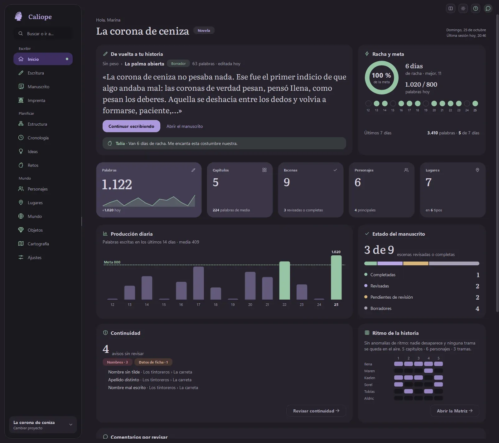
- 9:30Escena 2 de 5
Escribes la escena
Sigues en el capítulo cinco. El texto ocupa el centro, el índice espera a un lado y el formato aparece solo cuando lo pides.
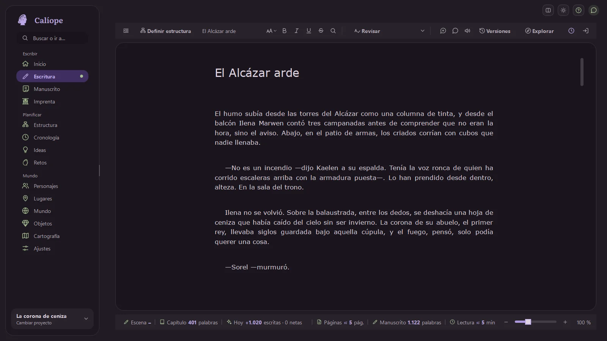
- 11:15Escena 3 de 5
Algo no casa
Calíope avisa de que un apellido no coincide con su ficha y de que unos ojos eran grises, no azules. Corriges desde el propio aviso o lo dejas si fue a propósito.
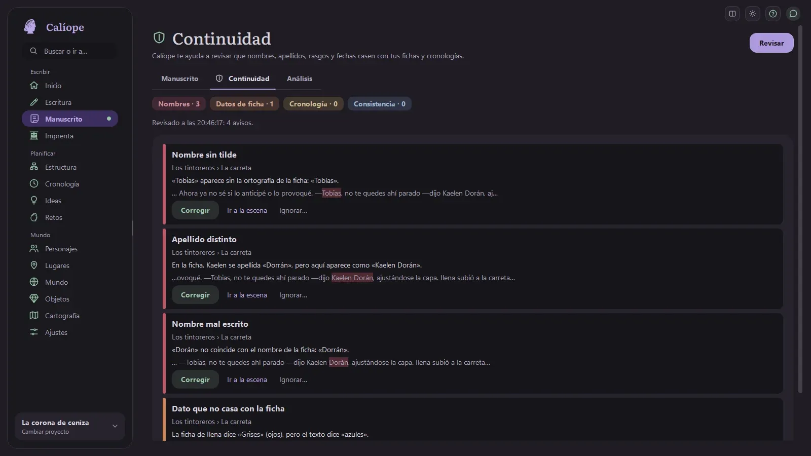
- 13:40Escena 4 de 5
Miras el ritmo
En la Matriz ves que Sorel lleva tres capítulos sin aparecer. Si es lo que buscabas, lo marcas como intencional; si no, ya sabes dónde mirar.
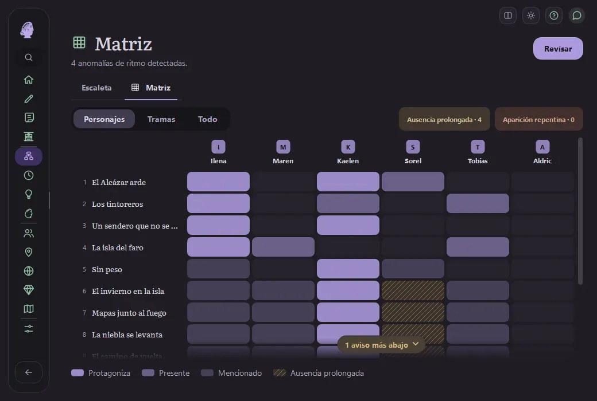
- 20:00Escena 5 de 5
Cierras con el libro
Al caer la tarde compilas lo escrito y miras cómo quedan las páginas, con su índice y su nota previa.
Invoca atus musas.
Un día con Calíope
Un día cualquiera con el proyecto de ejemplo, «La corona de ceniza». Avanza con los botones, las flechas del teclado o deslizando.
Mírala por dentro
Más pantallas del mismo proyecto de ejemplo, agrupadas por lo que estés haciendo. Elige el tema que usas tú.
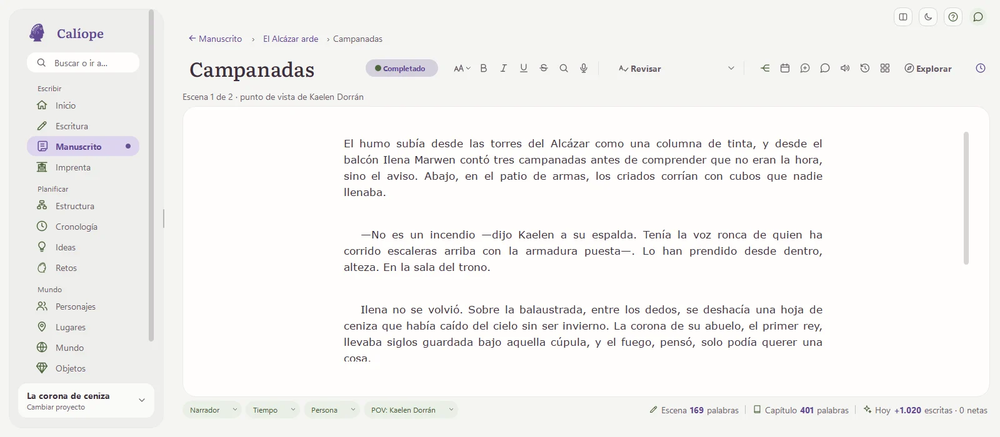
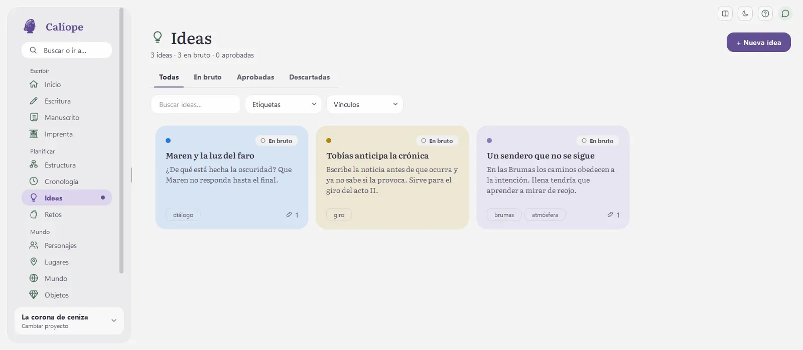
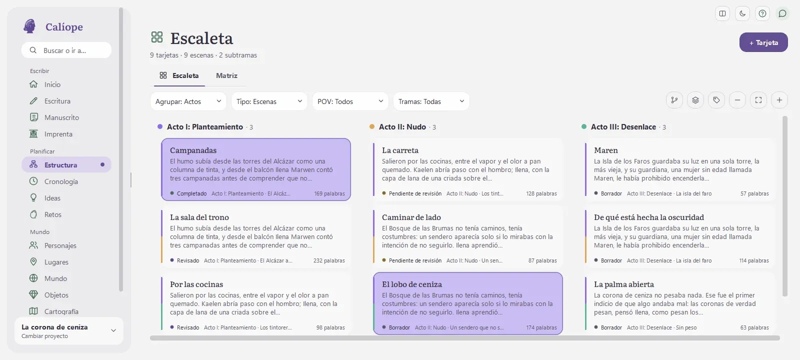
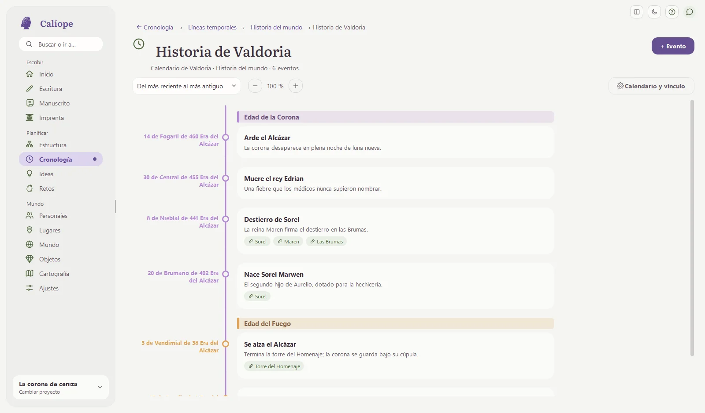
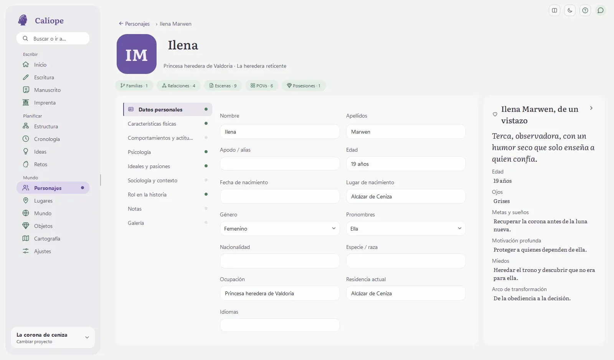
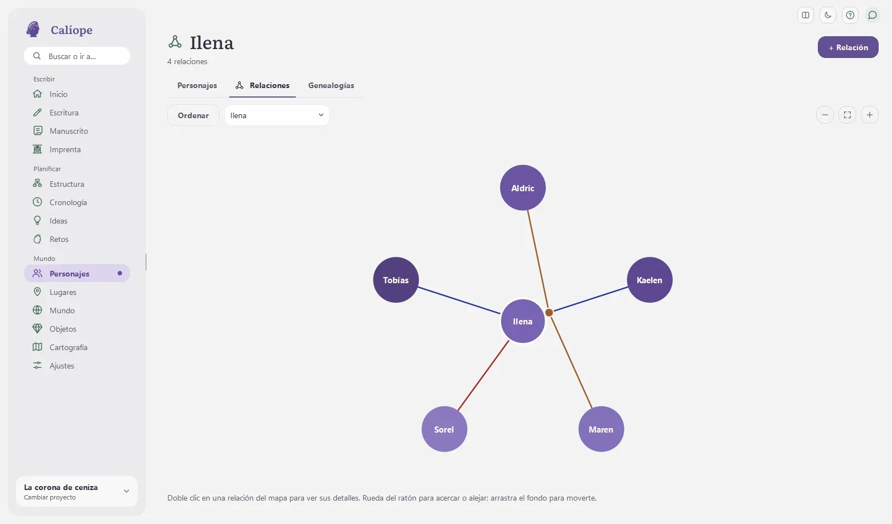
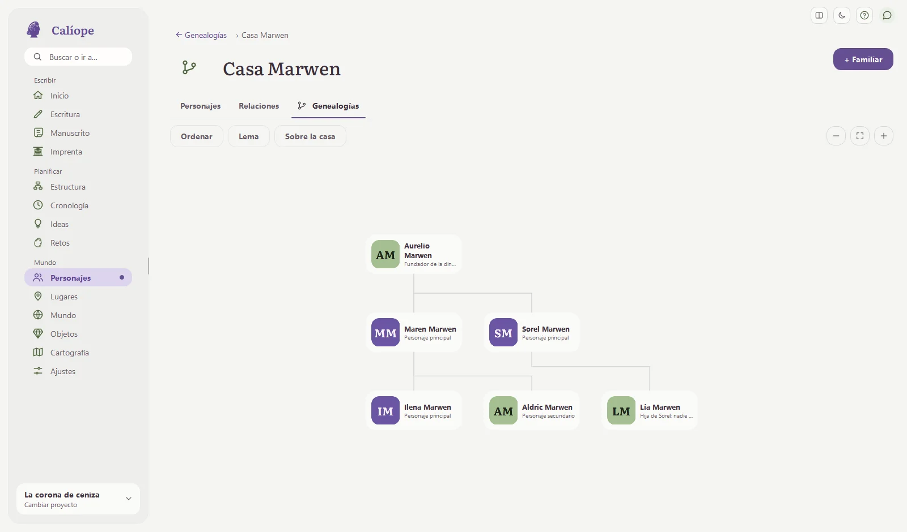
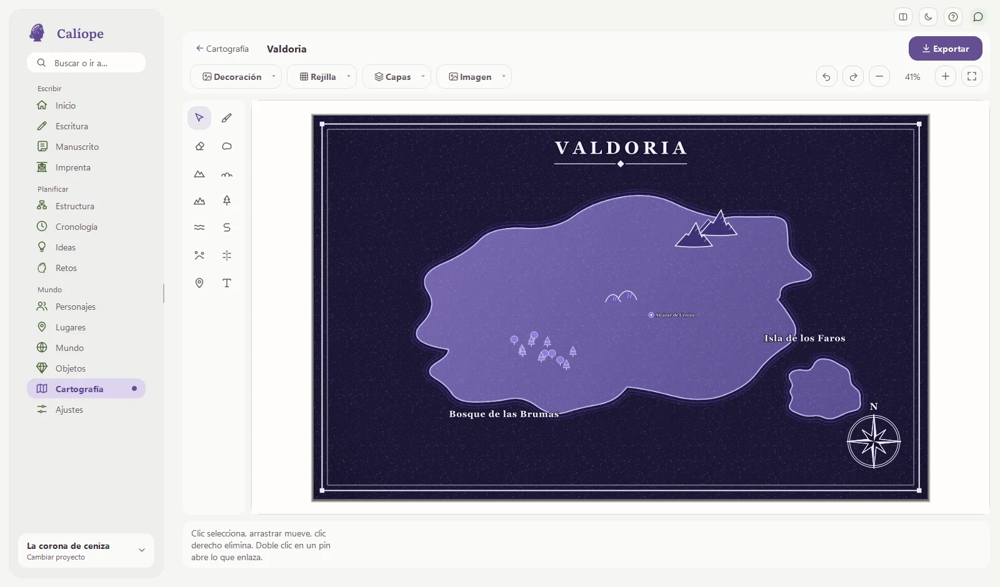
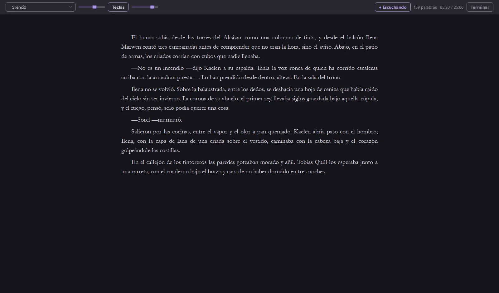
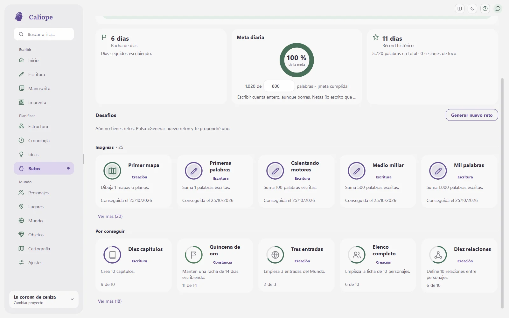
Cada pieza, en su sitio
Cada parte de tu historia tiene su lugar, y todas hablan entre sí. Pasa el ratón por una tarjeta, enfócala con el teclado o púlsala, para ver qué hace.
Escritura
Todo el manuscrito reunido en un solo documento. Al importar un archivo detecta partes, capítulos y escenas, y tú confirmas las dudas.
Estructura
Escaleta de tarjetas por actos o tramas y Matriz de presencia: quién aparece, en qué capítulos y dónde se enfría la trama.
Personajes
Fichas a medida para personajes, lugares y objetos, enlazadas con tus escenas.
Mundo narrativo
Universo, mitología, bestiario, historia y civilizaciones, con campos para cada entrada.
Relaciones
Un mapa interactivo de vínculos y árboles genealógicos que se mantienen iguales entre sí.
Cronología
Líneas temporales con el calendario que tu mundo necesite y edades a tu medida.
Cartografía
Mapas de mundos y planos de ciudades con rejilla, símbolos y pines enlazados a tus fichas.
Imprenta
Compila tu novela con maquetación cuidada: EPUB, Kindle, Word y PDF.
Del manuscrito al libro, sin salir de Calíope
Imprenta maqueta tu manuscrito, y si quieres también tu mundo, y lo deja en un archivo listo para leer, imprimir o editar. Elige un formato y mira cómo lo trata.
EPUB 3: para leer en pantalla
El formato estándar de los libros electrónicos. La página la decide quien lee: el texto se reajusta al tamaño de letra y al dispositivo, sin saltos de página fijos.
Úsalo para leer en una tableta, un móvil o una aplicación de lectura, o para mandar una versión de prueba. Los adornos de esquina se colocan al abrir y cerrar cada capítulo.
Kindle: AZW3 o MOBI
Con Calibre instalado, Calíope genera AZW3; sin él, crea un MOBI propio.
Úsalo para tu Kindle. Si no lo abre, el EPUB con «Enviar a Kindle» es la alternativa.
Word (DOCX): para revisar o maquetar fuera
Respeta el tamaño de página, la tipografía, los títulos y los números de página que hayas elegido.
Úsalo para pasar el texto a otra persona que lo revise con control de cambios, o para terminar la maquetación en tu programa de siempre.
PDF: para imprimir
Tamaño de página, márgenes, adornos y numeración quedan fijos tal como los ves en la vista previa.
Úsalo para imprimir una copia, llevarla a una imprenta o compartir un original que no cambie de aspecto.
Para AZW3 hace falta Calibre; las demás exportaciones no necesitan nada más.
Capítulo 1
El Alcázar arde
El humo subía desde las torres del Alcázar como una columna de tinta, y desde el balcón Ilena Marwen contó tres campanadas antes de comprender que no eran la hora, sino el aviso.
—No es un incendio —dijo Kaelen a su espalda—. Lo han prendido desde dentro, alteza. En la sala del trono.
Ilena no se volvió. Sobre la balaustrada se deshacía una hoja de ceniza que había caído del cielo sin ser invierno.
La huida
Salieron por las cocinas, entre el vapor y el olor a pan quemado. Kaelen abría paso con el hombro.
Ilena, con la capa de lana de una criada sobre el vestido, caminaba con la cabeza baja y el corazón golpeándole las costillas.
La corona de ceniza.docx
InicioInsertarDiseñoRevisar
La corona de ceniza
3. Los tintoreros
En el callejón de los tintoreros las paredes goteaban morado y añil.
Tobías Quill los esperaba junto a una carreta, con el cuaderno bajo el brazo y cara de no haber dormido en tres noches.
1La corona de ceniza
Una novela de fuego y memoria
Lía Ferrer
Primera edición, 2026
ISBN 978-84-000-0000-0
Capítulo uno
El Alcázar arde
El humo subía desde las torres del Alcázar como una columna de tinta, y desde el balcón Ilena Marwen contó tres campanadas antes de comprender que no eran la hora, sino el aviso.
—No es un incendio —dijo Kaelen a su espalda—. Lo han prendido desde dentro, en la sala del trono.
Ilena no se volvió. Entre los dedos se deshacía una hoja de ceniza que había caído del cielo sin ser invierno.
13
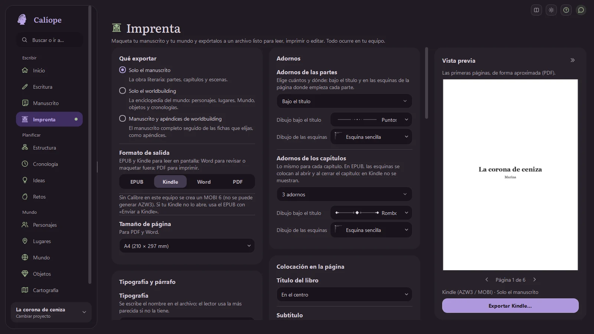
Con vista previa de tu texto
La pantalla de Imprenta enseña una página real de tu manuscrito mientras ajustas tipografía, títulos y adornos. Si todavía no hay texto, no hay nada que previsualizar.
Tipografía y párrafo
Fuente, tamaño, sangría de la primera línea, interlineado, espacio entre párrafos y texto justificado.
Partes y capítulos
Cómo se numeran y se etiquetan, letra capitular, separador de escenas y adornos bajo el título y en las esquinas.
Páginas del libro
Portada con título, subtítulo, autoría, fecha e ISBN; nota previa, índice de contenidos, números de página y citas.
Qué entra
Solo el manuscrito, solo tu mundo o el manuscrito con apéndices de tu mundo.
Tu obra vive en tu ordenador
Escribes en tu equipo y lo que escribes se queda donde tú lo guardas: sin nube y sin servidor.
Funciona sin conexión
Manuscrito, fichas, mapas, corrector, sinónimos, dictado y exportación son locales.
Sin cuentas ni registro
Instalas, abres y escribes.
Copias a tu manera
Guarda cada proyecto en un archivo y llévalo donde quieras.
¿Y si llamamos a más musas?
Calíope ya está contigo. Si te apetece algo más de compañía, hay dos musas más. Las dos son opcionales y se apagan desde Ajustes.
ClíoIA
Un chat con dos modos. Local, con el que empieza siempre, no es una IA y nada sale de tu ordenador. IA es la única parte de Calíope con inteligencia artificial, y no recibe el contenido de tu proyecto.
TalíaSin IA
Tu compañera de escritura: metas diarias, rachas, desafíos creativos, Modo Foco y Ultra Foco, insignias y comentarios amables sobre tu historia.
Preguntas frecuentes
Lo que suele preguntarse antes de instalar.
¿Puedo llevarme un proyecto a otro ordenador?
Sí. Guardas el proyecto en un archivo, lo copias y lo abres con Calíope en el otro equipo.
¿Cuándo usa internet Calíope?
Solo en dos casos: el modo IA de Clío, si lo activas, y la comprobación de versiones nuevas.
¿Puedo escribir una saga con varios libros?
Sí. Reúnes varios libros en una saga y compartes entre ellos personajes, lugares y mundo.
¿Las ideas cuentan como palabras escritas?
No. Las notas de Ideas quedan fuera de las estadísticas y de las metas: solo cuenta el texto que llevas a una escena.
¿Y si esta web desaparece algún día?
Calíope no depende de ella para funcionar. Tus proyectos son archivos tuyos y se quedan en tu equipo.
Instala Calíope en un minuto
Versión 2.9.1 para Windows y Mac. Sigue los pasos de tu sistema.
- Windows: 10 u 11.
- Mac: con chip Apple (M1, M2, M3, M4…).
- Linux: por ahora sin instalador.
En Windows
- Descarga el instalador
.exey ábrelo. - Si SmartScreen avisa, pulsa Más información › Ejecutar de todas formas: el instalador aún no está firmado.
- Sigue el asistente; no necesita permisos de administrador.
En Mac
- Descarga el
.dmg, ábrelo y arrastra Calíope a Aplicaciones. - La primera vez: clic derecho (o Control + clic) › Abrir › Abrir.
- Si dice que está dañada, escribe en Terminal:
xattr -dr com.apple.quarantine /Applications/Caliope.app